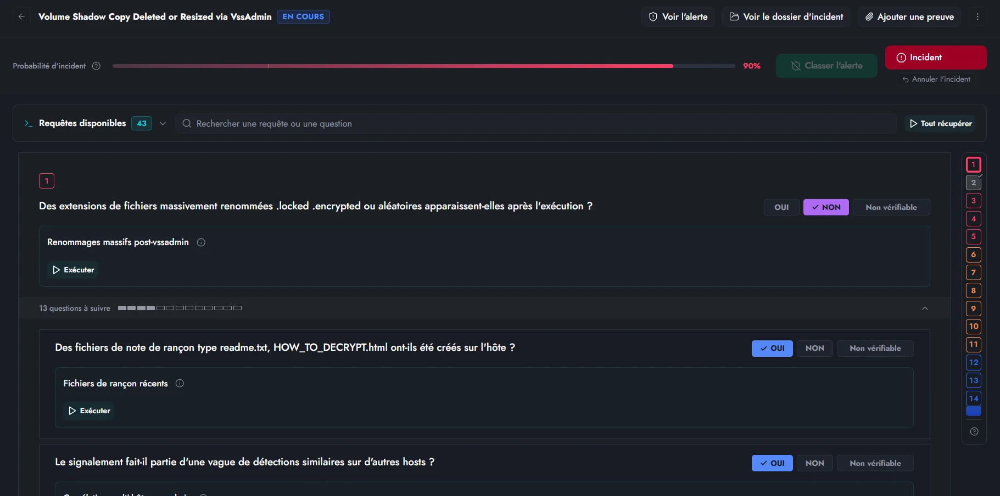
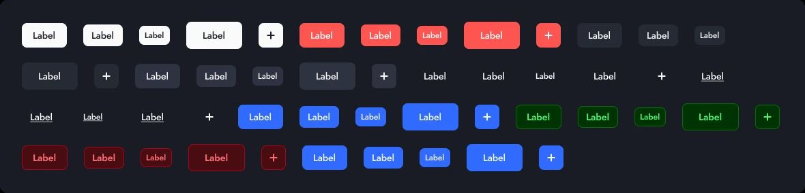

Artefact · Case study
Rendre la cyber lisible
Une plateforme d'investigation pour analystes SOC, qui doit rester lisible pour toutes les personnes qui suivent un incident.
- Rôle
- Product Designer UX/UI, cofondateur
- Contexte
- SaaS B2B, cybersécurité
- Équipe
- 4 personnes : dev, ingénieurs sécurité, métiers
11
décisions produit tracées en tickets après une session de test
18 → 2
niveaux de questions dans les guides, limite livrée après les tests
12
corrections issues d'un audit heuristique, toutes livrées
8
jeux de composants Figma créés en 24 h
Le contexte
Le produit et mon rôle
Artefact est une plateforme d'investigation pour analystes SOC : alertes, investigation, réponse aux incidents. J'en suis cofondateur et j'y tiens le rôle de Product Designer UX/UI, avec un périmètre produit : roadmap, backlog, spécifications et critères d'acceptation.
Les quatre cas montrent comment je travaille : tester avant de trancher, auditer avant de redessiner, et ne rien considérer comme validé sans preuve.
Cas 1
Recherche utilisateur
18 → 2
Guides d'investigation : de 18 niveaux à 2
Dans Artefact, un analyste mène une investigation en suivant un guide : des étapes, des actions et des questions dont les réponses ouvrent d'autres questions. Rien ne limitait la profondeur de ces questions, qui pouvait atteindre 18 niveaux.
Ce que j'ai fait
- Un protocole figé avant tout recrutement : 8 missions sur le workflow cœur, des réponses de référence connues à l'avance, un environnement de test dédié.
- 6 mesures par mission : résultat, durée, niveau d'aide, erreurs, retours arrière et confiance déclarée. Seuil de décision fixé à 80 %.
- Un registre qui sépare les décisions de design, les décisions fonctionnelles et les décisions de construction, chacune liée à son ticket.

| Observation | Décision |
|---|---|
| Le lien entre une question et ses questions filles n'est pas compris | Limiter les guides à 2 niveaux, à la création, à l'édition et à l'import |
| Les éléments cliquables sont pris pour de simples tags | Une affordance d'action distincte, avec tous ses états |
| « Clôturer » en rouge est lu comme une erreur | Un traitement neutre et une confirmation claire |
| L'analyste veut comprendre pourquoi une alerte s'est déclenchée, sans verdict imposé | Un encart « Pourquoi cette alerte ? » qui sépare faits, interprétation et recommandation |
Résultat
11 décisions (6 de design, 5 fonctionnelles), chacune tracée en ticket avec ses critères d'acceptation. La limite à 2 niveaux est livrée, avec une migration prévue pour les guides existants.
C'était une première session, avec un seul participant : assez pour corriger ce qui bloquait, pas pour généraliser. Une décision n'est considérée comme validée que lorsqu'un utilisateur réussit l'action sans explication orale.
Cas 2
Audit UX
75 questions
Un questionnaire oui / non qui faisait douter l'analyste
Pour qualifier une alerte, l'analyste répond à un questionnaire tiré du guide d'investigation. Sur l'alerte étudiée, un scénario de rançongiciel, il y avait 14 questions de départ, 75 avec les questions de suivi, et 43 requêtes pour vérifier les réponses.
J'ai mené l'audit : les 10 heuristiques de Nielsen, une sévérité notée de 0 à 4, un relevé d'accessibilité dans le code de la page, puis des recommandations et des wireframes avant / après.
| Problème | Sévérité |
|---|---|
| Aucun lien entre la preuve et la réponse : une question est à OUI alors que la requête ne remonte rien | 4 sur 4 |
| Des questions qui proposent un choix déguisé en oui / non | 3 sur 4 |
| OUI veut dire « suspect » sur certaines questions et « rassurant » sur d'autres | 3 sur 4 |
| « 1 / 75 répondues » et 98 % de probabilité après une seule réponse, sans explication | 3 sur 4 |
| Pas de réponse « Non vérifiable » : l'analyste doit deviner | 3 sur 4 |
Le plus grave : une alerte pouvait être classée à tort sans que rien ne le signale.
Ce que j'ai proposé
- Une règle d'écriture pour tout le guide : une question, un fait vérifiable, une réponse sans ambiguïté.
- Afficher sous chaque réponse son effet sur la suspicion, plutôt que réécrire les 75 questions.
- 12 corrections faisables en un sprint, classées par impact et par effort, et 4 composants redessinés.
- Un chantier plus lourd : que la requête suggère la réponse, et que l'analyste justifie s'il la contredit.
Résultat
Les 12 corrections sont livrées. Un oui / non n'est simple que si la question l'est : sur un écran où une erreur coûte un incident manqué, la rédaction des questions compte autant que l'interface.

La carte question montre l'effet de la réponse, la branche qu'elle ouvre, et propose « Non vérifiable ». Les repères QW renvoient aux corrections de l'audit.

L'en-tête reste visible et explique son pourcentage ; la progression compte les questions atteignables, pas les 75.

Le résultat de la requête est confronté à la réponse : si les deux divergent, l'analyste corrige ou justifie.

La navigation latérale ne code plus qu'un état, avec une légende et un nom accessible par question.

Cas 3
Design system
24 heures
Un design system exact, mais relié à rien
Le design system d'Artefact existait sous forme de board Figma très soigné. Personne ne savait s'il correspondait encore au code React de l'application. Je l'ai audité avec des scripts lancés dans le fichier Figma et sur le dépôt de code.
| Constat | Mesure |
|---|---|
| Tokens du board absents du code | 0 sur 177 |
| Composants Figma | 0 sur 9 pages |
| Remplissages reliés à une variable | 22 sur 1 270 (1,7 %) |
| Textes utilisant un style partagé | 0 sur 850 |
| Pastilles de couleur déjà en dérive | 7 sur 39 |
| Statuts d'incident documentés qui existent dans le code | 0 sur 4 |
| Tailles de bouton documentées exactes | 0 sur 3 |
La couche tokens était exacte. Mais le board décrivait deux workflows de statuts qui n'existent pas dans l'application : un designer qui s'y fiait dessinait des écrans faux.
Ce que j'ai fait en 24 heures
- Jeux de composants
- 0 → 8
- jeux de composants
- Variables
- 199
- variables, contre 177
- Variantes du Button
- 50
- variantes du Button
- Icônes
- 133
- icônes importées
Puis une feuille de route sur les 42 composants du code, classés par nombre de fichiers qui les utilisent.

Découverte la plus utile : les 10 styles de texte du board étaient calculés pour une racine de 16 px alors que le produit tournait à 15 px. Les deux tailles concernées couvraient 94 % des usages typographiques. Le produit est depuis passé à 16 px, ce qui a rendu les 10 styles exacts sans les redessiner.
Ce que j'en retiens : un design system sans composants reliés diverge dès la première urgence. Ici, la dérive était déjà mesurable : quatre pastilles portaient les mêmes valeurs périmées que la documentation.
Cas 4
IA et qualité
3 campagnes
Des critères que des agents IA vérifient
Les nouvelles fonctionnalités d'Artefact sortaient sans qu'on sache vraiment dans quel état elles étaient : ce qui marchait, ce qui avait régressé, ce qui n'avait jamais été vérifié.
J'écris les spécifications, les règles métier et les critères d'acceptation de chaque fonctionnalité. J'ai aussi conçu le modèle de données des guides d'investigation : quatre niveaux (investigation, étape, action, question) et un identifiant métier stable pour les importer sans doublons.
Ce que j'ai mis en place
- Des specs et un modèle de données assez précis pour qu'un agent de code, Claude Code, produise un premier prototype à partir des maquettes.
- Des critères d'acceptation écrits comme des comportements observables, par exemple : une alerte sous investigation active n'est pas reclassée automatiquement en faux positif.
- Un agent de test par fonctionnalité, qui rejoue ces critères sur l'environnement de test et rend un verdict par critère.
- Des garde-fous écrits : jamais de validation sans preuve observée, et la main passe à un humain dès qu'il faut une authentification forte.
Étape 1
Spec et modèle de données
Étape 2
Critères observables
Étape 3
Agent de test sur l'environnement de test
-
Verdict
- Réussigarde anti-régression
- Échouéticket de test créé
- Non testablepassé à un humain
Aucun critère n'est validé sans preuve observée : ce que l'agent ne peut pas vérifier revient à un humain.
| Critère | Verdict de l'agent |
|---|---|
| Ouvrir une investigation depuis le détail d'une alerte | Réussi |
| L'alerte reflète tout de suite l'ouverture de l'investigation | Réussi non testable au passage précédent |
| Retrouver l'investigation d'une alerte par la recherche | Réussi friction : la recherche ignore l'identifiant de l'alerte |
| Une alerte sous investigation n'est pas reclassée en faux positif | Réussi |
| Notifications à l'ouverture et à la clôture | Non testable aucun connecteur sur l'environnement de test, repassé à un humain |
Le même passage a relevé un bug hors périmètre : classer l'alerte clôturait l'investigation sans dater sa fin. Le rapport recommande la correction.
Résultat
Quatre fonctionnalités prototypées de cette façon avec Claude Code sont en production : la remédiation, la matrice MITRE ATT&CK, les dossiers d'incident et la refonte de la vue de clôture des alertes. 3 campagnes automatisées (usabilité, sécurité, non-régression), chacune avec un rapport et des preuves. Une campagne de sécurité a repéré un défaut d'authentification critique avant le pilote utilisateur.
Ce que j'en retiens : un agent de test vaut ce que valent les critères qu'on lui donne. Le travail de product designer se déplace vers l'écriture de critères observables et de règles de verdict.
Voir comment je travaille avec l'IASuite
Voir d'autres projets
© 2026 William Suzan · Artefact · Case study 01